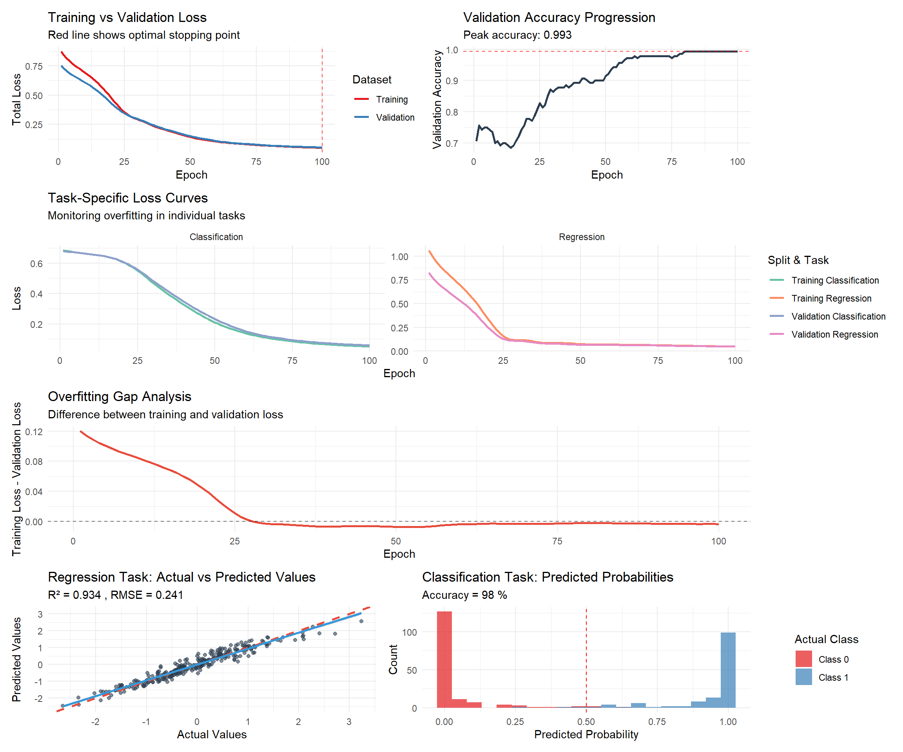

# install.packages(c("torch", "tidyverse", "corrplot"))
# install_torch()Multi-Task Learning with torch in R
R
Deep Learning
torch
Multi-Task Learning
Multi-task learning (MTL) is an approach where a single neural network model is trained to perform multiple related tasks simultaneously. This methodology can improve model generalization, reduce overfitting, and leverage shared information across tasks. This post explores how to implement a multi-task learning model using the torch package in R.
Multi-task learning operates by sharing representations between related tasks, enabling models to generalize more effectively. Instead of training separate models for each task, this approach develops a single model with:
- Shared layers that learn common features across tasks
- Task-specific layers that specialize for each individual task
- Multiple loss functions, one for each task
This approach is particularly valuable when dealing with related prediction problems that can benefit from shared feature representations.
Required Packages
# Load required libraries
library(torch)
library(tidyverse)
library(ggplot2)
library(corrplot)Creating a MTL Model
The implementation will construct a model that simultaneously performs two related tasks:
- Regression: Predicting a continuous value
- Classification: Predicting a binary outcome
Sample Data
# Set seed for reproducibility
set.seed(123)
# Number of samples
n <- 1000
# Create a dataset with 5 features
x <- torch_randn(n, 5)
# Task 1 (Regression): Predict continuous value
# Create a target that's a function of the input features plus some noise
y_regression <- x[, 1] * 0.7 + x[, 2] * 0.3 - x[, 3] * 0.5 + torch_randn(n) * 0.2
# Task 2 (Classification): Predict binary outcome
# Create a classification target based on a nonlinear combination of features
logits <- x[, 1] * 0.8 - x[, 4] * 0.4 + x[, 5] * 0.6
y_classification <- (logits > 0)$to(torch_float())
# Split into training (70%) and testing (30%) sets
train_idx <- 1:round(0.7 * n)
test_idx <- (round(0.7 * n) + 1):n
# Training data
x_train <- x[train_idx, ]
y_reg_train <- y_regression[train_idx]
y_cls_train <- y_classification[train_idx]
# Testing data
x_test <- x[test_idx, ]
y_reg_test <- y_regression[test_idx]
y_cls_test <- y_classification[test_idx]Define the Multi-Task Neural Network
The architecture design creates a neural network with shared layers and task-specific branches:
# Define the multi-task neural network
multi_task_net <- nn_module(
"MultiTaskNet",
initialize = function(input_size,
hidden_size,
reg_output_size = 1,
cls_output_size = 1) {
self$input_size <- input_size
self$hidden_size <- hidden_size
self$reg_output_size <- reg_output_size
self$cls_output_size <- cls_output_size
# Shared layers - these learn representations useful for both tasks
self$shared_layer1 <- nn_linear(input_size, hidden_size)
self$shared_layer2 <- nn_linear(hidden_size, hidden_size)
# Task-specific layers
# Regression branch
self$regression_layer <- nn_linear(hidden_size, reg_output_size)
# Classification branch
self$classification_layer <- nn_linear(hidden_size, cls_output_size)
},
forward = function(x) {
# Shared feature extraction
shared_features <- x %>%
self$shared_layer1() %>%
nnf_relu() %>%
self$shared_layer2() %>%
nnf_relu()
# Task-specific predictions
regression_output <- self$regression_layer(shared_features)
classification_logits <- self$classification_layer(shared_features)
list(
regression = regression_output,
classification = classification_logits
)
}
)
# Create model instance
model <- multi_task_net(
input_size = 5,
hidden_size = 10
)
# Print model architecture
print(model)An `nn_module` containing 192 parameters.
── Modules ─────────────────────────────────────────────────────────────────────
• shared_layer1: <nn_linear> #60 parameters
• shared_layer2: <nn_linear> #110 parameters
• regression_layer: <nn_linear> #11 parameters
• classification_layer: <nn_linear> #11 parameters4. Define Loss Functions and Optimizer
Multi-task learning requires separate loss functions for each task.
# Loss functions
regression_loss_fn <- nnf_mse_loss # Mean squared error for regression
classification_loss_fn <- nnf_binary_cross_entropy_with_logits # Binary cross-entropy for classification
# Optimizer with weight decay for L2 regularization
optimizer <- optim_adam(model$parameters, lr = 0.01)
# Task weights - these control the relative importance of each task
task_weights <- c(regression = 0.5, classification = 0.5)
# Validation split from training data
val_size <- round(0.2 * length(train_idx))
val_indices <- sample(train_idx, val_size)
train_indices <- setdiff(train_idx, val_indices)
# Create validation sets
x_val <- x[val_indices, ]
y_reg_val <- y_regression[val_indices]
y_cls_val <- y_classification[val_indices]
# Update training sets
x_train <- x[train_indices, ]
y_reg_train <- y_regression[train_indices]
y_cls_train <- y_classification[train_indices]Training Loop
# Hyperparameters
epochs <- 100 # Increased epochs since we have early stopping
# Enhanced training history tracking
training_history <- data.frame(
epoch = integer(),
train_reg_loss = numeric(),
train_cls_loss = numeric(),
train_total_loss = numeric(),
val_reg_loss = numeric(),
val_cls_loss = numeric(),
val_total_loss = numeric(),
val_accuracy = numeric()
)
for (epoch in 1:epochs) {
# Training phase
model$train()
optimizer$zero_grad()
# Forward pass on training data
outputs <- model(x_train)
# Calculate training loss for each task
train_reg_loss <- regression_loss_fn(
outputs$regression$squeeze(),
y_reg_train
)
train_cls_loss <- classification_loss_fn(
outputs$classification$squeeze(),
y_cls_train
)
# Weighted combined training loss
train_total_loss <- task_weights["regression"] * train_reg_loss +
task_weights["classification"] * train_cls_loss
# Backward pass and optimize
train_total_loss$backward()
# Gradient clipping to prevent exploding gradients
nn_utils_clip_grad_norm_(model$parameters, max_norm = 1.0)
optimizer$step()
# Validation phase
model$eval()
with_no_grad({
val_outputs <- model(x_val)
# Calculate validation losses
val_reg_loss <- regression_loss_fn(
val_outputs$regression$squeeze(),
y_reg_val
)
val_cls_loss <- classification_loss_fn(
val_outputs$classification$squeeze(),
y_cls_val
)
val_total_loss <- task_weights["regression"] * val_reg_loss + task_weights["classification"] * val_cls_loss
# Calculate validation accuracy
val_cls_probs <- nnf_sigmoid(val_outputs$classification$squeeze())
val_cls_preds <- (val_cls_probs > 0.5)$to(torch_int())
val_accuracy <- (val_cls_preds == y_cls_val$to(torch_int()))$sum()$item() / length(val_indices)
})
# Record history
training_history <- rbind(
training_history,
data.frame(
epoch = epoch,
train_reg_loss = as.numeric(train_reg_loss$item()),
train_cls_loss = as.numeric(train_cls_loss$item()),
train_total_loss = as.numeric(train_total_loss$item()),
val_reg_loss = as.numeric(val_reg_loss$item()),
val_cls_loss = as.numeric(val_cls_loss$item()),
val_total_loss = as.numeric(val_total_loss$item()),
val_accuracy = val_accuracy
)
)
# Print progress every 25 epochs
if (epoch %% 25 == 0 || epoch == 1) {
cat(sprintf("Epoch %d - Train Loss: %.4f, Val Loss: %.4f, Val Acc: %.3f\n",
epoch,
train_total_loss$item(),
val_total_loss$item(),
val_accuracy))
}
}Epoch 1 - Train Loss: 0.8733, Val Loss: 0.7528, Val Acc: 0.707
Epoch 25 - Train Loss: 0.3545, Val Loss: 0.3434, Val Acc: 0.829
Epoch 50 - Train Loss: 0.1423, Val Loss: 0.1495, Val Acc: 0.914
Epoch 75 - Train Loss: 0.0743, Val Loss: 0.0770, Val Acc: 0.971
Epoch 100 - Train Loss: 0.0506, Val Loss: 0.0540, Val Acc: 0.993Model Evaluation
# Set model to evaluation mode
model$eval()
# Make predictions on test set
with_no_grad({
outputs <- model(x_test)
# Regression evaluation
reg_preds <- outputs$regression$squeeze()
reg_test_loss <- regression_loss_fn(reg_preds, y_reg_test)
# Classification evaluation
cls_preds <- outputs$classification$squeeze()
cls_probs <- nnf_sigmoid(cls_preds)
cls_test_loss <- classification_loss_fn(cls_preds, y_cls_test)
# Convert predictions to binary (threshold = 0.5)
cls_pred_labels <- (cls_probs > 0.5)$to(torch_int())
# Calculate accuracy
accuracy <- (cls_pred_labels == y_cls_test$to(torch_int()))$sum()$item() / length(test_idx)
})
# Calculate additional metrics
reg_preds_r <- as.numeric(reg_preds)
y_reg_test_r <- as.numeric(y_reg_test)
cls_probs_r <- as.numeric(cls_probs)
y_cls_test_r <- as.numeric(y_cls_test)
# Regression metrics
rmse <- sqrt(mean((reg_preds_r - y_reg_test_r)^2))
mae <- mean(abs(reg_preds_r - y_reg_test_r))
r_squared <- cor(reg_preds_r, y_reg_test_r)^2
# Classification metrics
auc <- pROC::auc(pROC::roc(y_cls_test_r, cls_probs_r, quiet = TRUE))
# Display results
performance_results <- data.frame(
Task = c("Regression", "Regression", "Regression", "Classification", "Classification", "Classification"),
Metric = c("Test Loss (MSE)", "RMSE", "R-squared", "Test Loss (BCE)", "Accuracy", "AUC"),
Value = c(
round(reg_test_loss$item(), 4),
round(rmse, 4),
round(r_squared, 4),
round(cls_test_loss$item(), 4),
round(accuracy * 100, 2),
round(auc * 100, 2)
)
)
print(performance_results) Task Metric Value
1 Regression Test Loss (MSE) 0.0581
2 Regression RMSE 0.2410
3 Regression R-squared 0.9337
4 Classification Test Loss (BCE) 0.0672
5 Classification Accuracy 98.0000
6 Classification AUC 99.8900Visualization and Overfitting Analysis
# Plot enhanced training history with overfitting detection
p1 <- training_history %>%
select(epoch, train_total_loss, val_total_loss) %>%
pivot_longer(cols = c(train_total_loss, val_total_loss),
names_to = "split", values_to = "loss") %>%
mutate(split = case_when(
split == "train_total_loss" ~ "Training",
split == "val_total_loss" ~ "Validation"
)) %>%
ggplot(aes(x = epoch, y = loss, color = split)) +
geom_line(size = 1) +
geom_vline(xintercept = which.min(training_history$val_total_loss),
linetype = "dashed", color = "red", alpha = 0.7) +
labs(title = "Training vs Validation Loss",
subtitle = "Red line shows optimal stopping point",
x = "Epoch", y = "Total Loss", color = "Dataset") +
theme_minimal() +
scale_color_brewer(palette = "Set1")
# Separate task losses
p2 <- training_history %>%
select(epoch, train_reg_loss, val_reg_loss, train_cls_loss, val_cls_loss) %>%
pivot_longer(cols = -epoch, names_to = "metric", values_to = "loss") %>%
separate(metric, into = c("split", "task", "loss_type"), sep = "_") %>%
mutate(
split = ifelse(split == "train", "Training", "Validation"),
task = ifelse(task == "reg", "Regression", "Classification"),
metric_name = paste(split, task)
) %>%
ggplot(aes(x = epoch, y = loss, color = metric_name)) +
geom_line(size = 1) +
facet_wrap(~task, scales = "free_y") +
labs(title = "Task-Specific Loss Curves",
subtitle = "Monitoring overfitting in individual tasks",
x = "Epoch", y = "Loss", color = "Split & Task") +
theme_minimal() +
scale_color_brewer(palette = "Set2")
# Validation accuracy progression
p3 <- ggplot(training_history, aes(x = epoch, y = val_accuracy)) +
geom_line(color = "#2c3e50", size = 1) +
geom_hline(yintercept = max(training_history$val_accuracy),
linetype = "dashed", color = "red", alpha = 0.7) +
labs(title = "Validation Accuracy Progression",
subtitle = paste("Peak accuracy:", round(max(training_history$val_accuracy), 3)),
x = "Epoch", y = "Validation Accuracy") +
theme_minimal()
# Overfitting analysis
training_history$overfitting_gap <- training_history$train_total_loss - training_history$val_total_loss
p4 <- ggplot(training_history, aes(x = epoch, y = overfitting_gap)) +
geom_line(color = "#e74c3c", size = 1) +
geom_hline(yintercept = 0, linetype = "dashed", alpha = 0.5) +
labs(title = "Overfitting Gap Analysis",
subtitle = "Difference between training and validation loss",
x = "Epoch", y = "Training Loss - Validation Loss") +
theme_minimal()
# Regression predictions vs actual values
regression_results <- data.frame(
Actual = y_reg_test_r,
Predicted = reg_preds_r
)
p5 <- ggplot(regression_results, aes(x = Actual, y = Predicted)) +
geom_point(alpha = 0.6, color = "#2c3e50") +
geom_abline(slope = 1, intercept = 0, color = "#e74c3c", linetype = "dashed", size = 1) +
geom_smooth(method = "lm", color = "#3498db", se = TRUE) +
labs(title = "Regression Task: Actual vs Predicted Values",
subtitle = paste("R² =", round(r_squared, 3), ", RMSE =", round(rmse, 3)),
x = "Actual Values", y = "Predicted Values") +
theme_minimal()
# Classification probability distribution
cls_results <- data.frame(
Probability = cls_probs_r,
Actual_Class = factor(y_cls_test_r, labels = c("Class 0", "Class 1"))
)
p6 <- ggplot(cls_results, aes(x = Probability, fill = Actual_Class)) +
geom_histogram(alpha = 0.7, bins = 20, position = "identity") +
geom_vline(xintercept = 0.5, linetype = "dashed", color = "red") +
labs(title = "Classification Task: Predicted Probabilities",
subtitle = paste("Accuracy =", round(accuracy * 100, 1), "%"),
x = "Predicted Probability", y = "Count", fill = "Actual Class") +
theme_minimal() +
scale_fill_brewer(palette = "Set1")
# Combine plots
library(patchwork)
(p1 | p3) / (p2) / (p4) / (p5 | p6)
Key Takeaways
- Architecture Design: The shared-private paradigm enables models to learn both common and task-specific representations
- Loss Combination: Properly weighting multiple loss functions proves crucial for balanced learning across tasks
- Evaluation Strategy: Each task requires appropriate metrics, and overall model success depends on performance across all tasks
- Parameter Efficiency: Multi-task models can achieve comparable performance with fewer total parameters when properly regularized
- Knowledge Transfer: Related tasks can benefit from shared feature learning, especially when data is limited